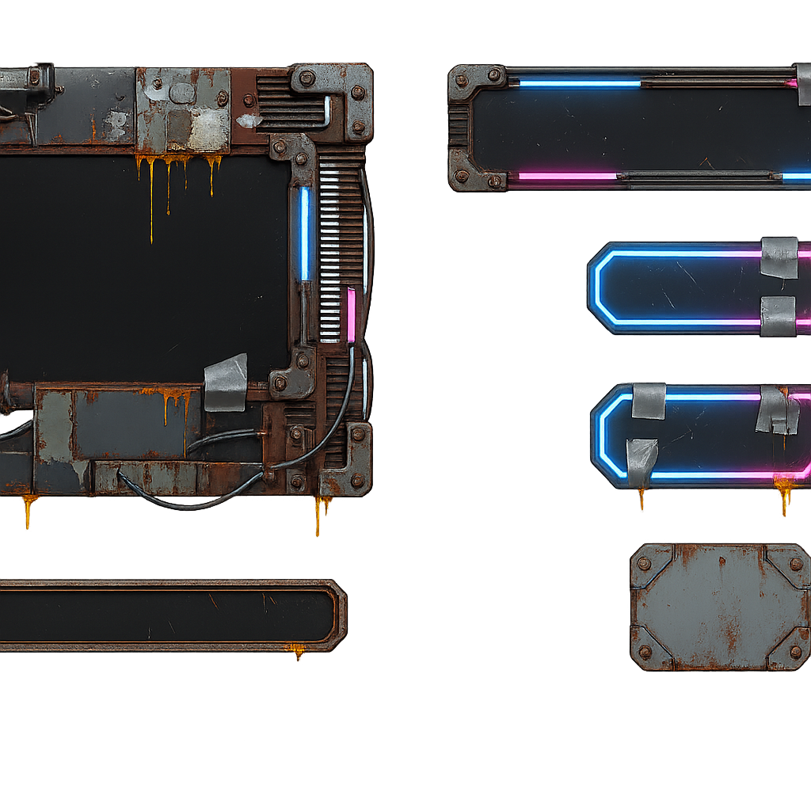
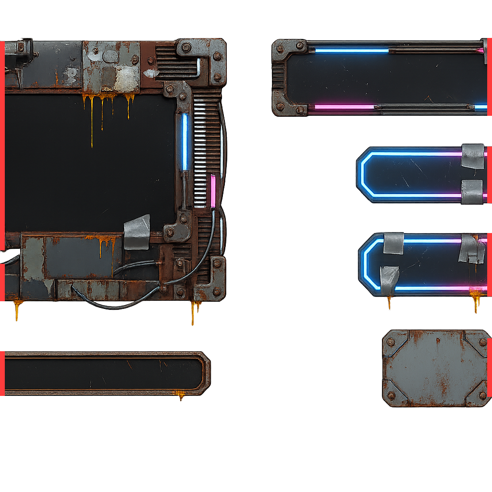

殭屍防禦 · UI · 試樣 v1
賽博龐克貧民窟風格的六個介面零件。這是第一張試樣，尚未套用進遊戲。

| 項目 | 結果 |
|---|---|
| 去背 | 透明像素 54.6%，上下邊全透明 |
| 風格 | 符合 鏽蝕、焊補、裸露電纜、鏽水垂痕、青藍／洋紅霓虹 |
| 不含文字 | 通過 沒有畫上假的中文或數字 |
| 元件完整入鏡 | 失敗 左邊 606 個、右邊 534 個不透明像素貼在畫布邊緣 |

四個元件出血到畫布左右邊緣被切斷。九宮格外框靠「四角完整、四邊可重複延伸」才能被程式拉伸，缺一角就沒辦法做九宮格——這張不能直接用。
zl_style_ui.txt 加死規則：所有元件必須完整入鏡，四周至少留 8% 邊距，任何一邊都不可以碰到畫布邊緣。重生一次 $0.20，等你同意再跑。
尚未寫入 Assets/